Figure 1.4: A force is a push or a pull.
A force is simply a push or a pull.
 Figure 1.5: A force can change the velocity of a mass.
A force is a vector and we need to specify both the direction and magnitude to describe a force. As shown in figure 1.5, when a force1 What we mean here is a net or resultant force. acts on a mass it changes the velocity of the mass. I.e. a force can change the speed and direction of a mass.
We know from everyday experience that more force means more acceleration. We also know that more mass means less acceleration. These ideas2 This is Newton’s 2nd law of motion. It is usually written
\(F=ma\) can be captured mathematically as
\[a = \dfrac{F}{m}\]